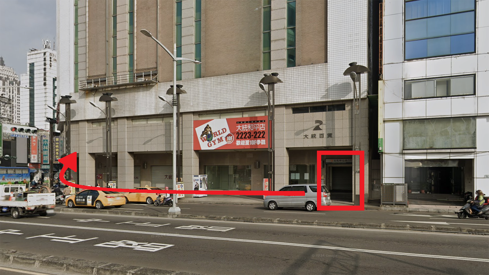
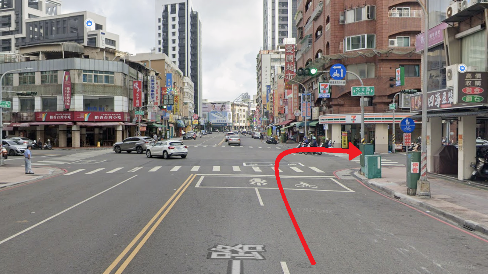
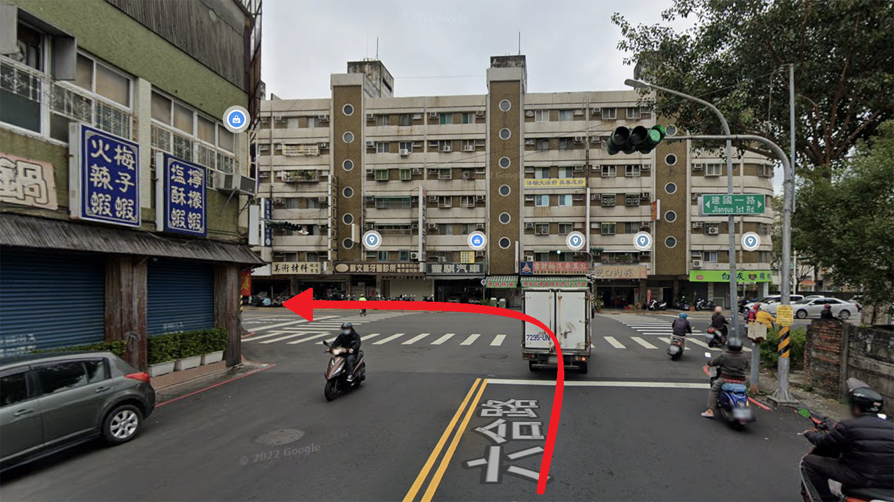
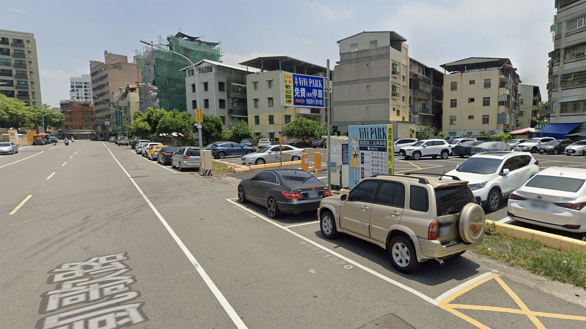
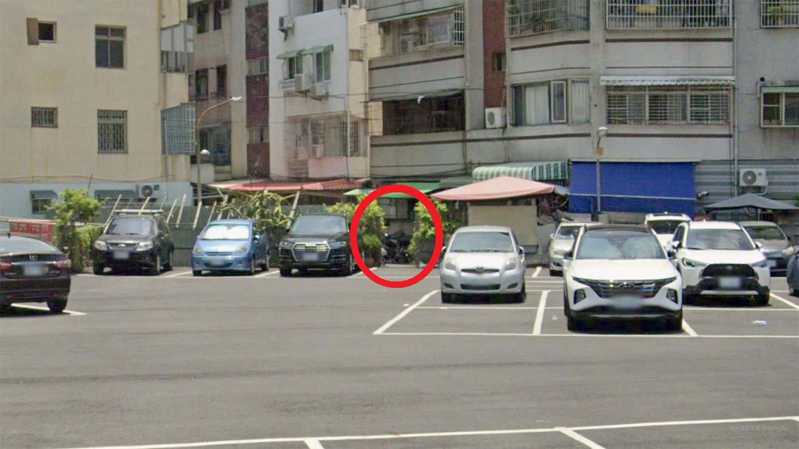

專業模型
🏠 店面遷移公告 🏠
新址啟航
高雄市三民區建國一路402巷5弄7號
🚂 方案 A：搭乘台鐵 (民族車站)
(👣 步行約 11 分鐘)


第三步 經過佛堂直直走
沿 6 弄直走約 20 公尺，看到「感恩佛堂」招牌，請穿過前方路口進入對面巷弄。
 💡 提示：此路口雖然稍微交錯，但請不要左右轉，直接往前方巷子（5 弄）走進去就對了！
💡 提示：此路口雖然稍微交錯，但請不要左右轉，直接往前方巷子（5 弄）走進去就對了！
第四步 抵達新據點
進入 5 弄後，左前方 7 號 即是我們的新空間！
 💡 提示：看到熟悉的張姐了嗎？歡迎進來坐坐，交流鐵道模型心得！
💡 提示：看到熟悉的張姐了嗎？歡迎進來坐坐，交流鐵道模型心得！
🚇 方案 B：搭乘捷運 (文化中心站)
(👣 步行約 13-15 分鐘)
第一步 4 號出口出發
從 文化中心站 4 號出口 出站後，請往 和平一路 方向走，並右轉沿著和平一路（往北/大統百貨方向）直行。
 💡 提示：出站後順著和平路往北走即可，不用過馬路。第二步 右轉六合路
沿著和平一路直行，遇到 六合路 時請右轉。順著這條路一路走到底，就會抵達 建國一路。
 💡 提示：六合路有許多小吃跟飲料，不趕時間的話，不妨順手帶杯涼的或點心，享受悠閒的散步時光。第三步 過馬路後左轉建國路
六合路走到底遇到 建國一路 時，請務必先過馬路到對面，再左轉沿著人行道直行。
 💡 重要提示：請在有紅綠燈的六合路口先跨越建國路！若直接左轉，走到 402 巷口時會沒有斑馬線可以過馬路喔。第六步 抵達新據點
進入 5 弄後，左前方 7 號 即是我們的新空間！
💡 提示：看到熟悉的張姐了嗎？歡迎進來坐坐，交流鐵道模型心得！
🅿️ 停車資訊
停車場 ViVi PARK 凱歌路二站 (推薦!)
建議停放於此停車場，距離店面最近。請認明這個入口標示牌。
停好車後，請往裡面走，直接穿過停車場後方的小門（如下圖），出來後就會在您的右手邊前方看到店面囉！
 💡 提示：從停車場後方小門非常快就可以到新店面囉！😵 附近繞了很久還是找不到？
別擔心，直接聯絡我們，馬上為您指路！